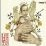

곡설명

배치기 [4집 Part.2]
이 시대 젊은이들의 '인생살이'를 노래한다! 배치기 "눈물샤워" 2013년 1월 14일 배치기 미니앨범 [4집 Part.2] 배치기가 전하는 가슴 아린 이별 이야기.. 타이틀곡 "눈물샤워". "반갑습니다", "마이동풍", "No.3", "두 마리" 등 많은 히트곡을 선보이며 힙합계의 대세로 자리잡은 힙합 듀오 배치기가 감성 힙합 발라드로 2013년을 새해의 첫 문을 연다.